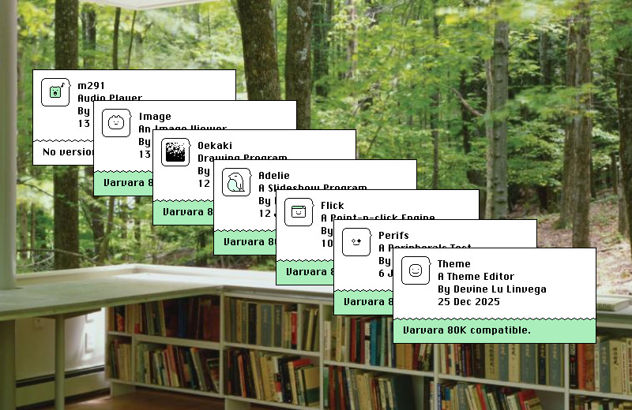
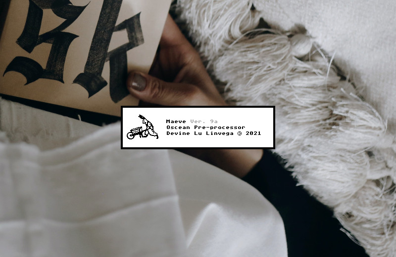

Metadata exposes additional information about a Varvara rom.
A program's metadata can be found by forming a 16-bit address from the second and third bytes of a compatible rom file. A compatible rom must begin with a0, a two bytes address, and the subsequent 3 bytes should always be 80 06 37.
| First six bytes | ||||||
|---|---|---|---|---|---|---|
| LIT2 | address | LIT | port | DEO2 | ... | |
| a0 | hb | lb | 80 | 06 | 37 | ... |
The address corresponds to the absolute location of the metadata, once loaded in memory, so it has a 0x100 bytes offset(the zero-page) which needs to be accounted for when accessing the metadata externally.
Body
The body of the metadata must start with a metadata version byte(typically zero), followed by a zero-terminated text to display the program name, author and other details. The metadata is stored in the rom itself to allow the program to make use of this information internally. The entire size of the metadata should be at most 256 bytes. Here is an example program with metadata:
|100 ( 54K . Example metadata ) @on-reset( -> ) ;meta #06 DEO2 BRK @meta ( version ) 00 ( text ) "Nasu 0a "A 20 "Sprite 20 "Editor 00 ( fields ) 02 ( varvara ) 56 0050 ( icon ) 83 =appicon
Fields
The metadata body is followed by a byte that contains the fields count, or zero. The count is then followed by fields made of an identifier byte and a value short.
| 56 | The Varvara version. |
|---|---|
| 83 | A 24x24 icon in the chr format. |
| a0 | The application manifest. |
| f0 | The muxn API. |
| .. | Anything else you'd like the rom to reveal.. |
If supported by the emulator, writing the metadata's address to the system device, via #06 DEO2, informs the emulator of the metadata's location, and it may choose to handle this information when a ROM is started.
Reading Metadata
A program can check a rom for metadata with the following routine:
@has-meta ( filename* -- bool ) .File/name DEO2 #0003 .File/length DEO2 ;&b .File/read DEO2k DEO2 #8006 ,&litport LDR2 EQU2 #37 ,&deo2 LDR EQU AND JMP2r &b &litport $2 &deo2 $1
- Metadata Viewer, Uxntal
- Metadata Viewer, repository

incoming: varvara now lie in it 2026 2023